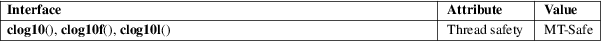

clog10, clog10f, clog10l − base-10 logarithm of a complex number
Math library (libm, −lm)
#define
_GNU_SOURCE /* See feature_test_macros(7) */
#include <complex.h>
double
complex clog10(double complex z);
float complex clog10f(float complex z);
long double complex clog10l(long double complex
z);
The call clog10(z) is equivalent to:
clog(z)/log(10)
or equally:
log10(cabs(c)) + I * carg(c) / log(10)
The other functions perform the same task for float and long double.
Note that z close to zero will cause an overflow.
For an explanation of the terms used in this section, see attributes(7).

GNU.
glibc 2.1.
The identifiers are reserved for future use in C99 and C11.
cabs(3), cexp(3), clog(3), clog2(3), complex(7)